——博客搭建指南——
1 准备工作
- 安装 quarkdown
- 安装 Git
- 注册 Cloudflare 账号
- (optional) 注册 阿里云 账号或者者 腾讯云 账号等等,购买一个域名。
2 创建gitee仓库: 存放博客静态资源
这个仓库用来存放图片、附件、quarkdown源文件等静态资源. 国内用户建议使用gitee,国外用户建议使用github.设为私有仓库,仓库名字,README.md文件随意。
仓库名为 blog-assets ,创建完成后,点击 克隆 按钮,复制仓库地址.将仓库克隆到本地电脑上, 使用vscode 打开blog-assets文件夹,然后就可以在这个repository里创建quarkdown源文件了. 例如,创建一个 blog.qd 的文件来作为博客主页,比如我的博客主页就是 blog.qd
.docname {blog}
.docdescription {a blog demo}
.doctype {plain}
.doclang {Chinese}
.theme {paperwhite} layout:{latex}
.docauthors
- qinguoming
.font code:{Consolas} size:{12pt}
.center
#! 处世如大梦, 悟者能有几
.align {end}
-- 宋-李纲
## 介绍
- [关于我](About.qd)
## 中文帮助
- [快速入门](./QuarkdownGuides/quarkdown_guidelines.qd)
- [Git 极简手册](./QuarkdownGuides/Git.qd)
- [quarkdown + Cloudflare + github repo 的博客搭建](./QuarkdownGuides/QuarkdownCloudflareForBlog.qd)
.center
## ----文章列表----
### Fortran语言
- [01 Lapack库求解广义特征值问题的子程序一览](./FortranLanguage/01_LapackSubroutineAboutGeneralEigenProblem.qd)
- [02 Fortran双精度编程一览](./FortranLanguage/02_FortranDoublePrecisionUseage.qd)
- [03 Fortran数组使用总结](./FortranLanguage/03_FortranMartrixUseage.qd)
- [04 Fortran矩阵切片与索引的多种方式](./FortranLanguage/04_FortranMatrixSliceAndIndex.qd)
- [05 Fortran字符串拼接的多种方式](./FortranLanguage/05_FortranStringConcatenation.qd)
- [06 Fortran内置字符串处理函数](./FortranLanguage/06_FortranBuilt_InStringFunctions.qd)
- [07 Fortran随机矩阵生成的多种方式](./FortranLanguage/07_FortranRandomMatrix.qd)
### 数值方法
- [01 数值积分与数值微分](./NumericalAlgorithm/01_NUMERICAL_INTEGRATION_AND_DIFFERENTIATION_METHOD.qd)
- [02 常微分方程初&边值问题数值解](./NumericalAlgorithm/02_ODES_IBVP.qd)
- [03 常用阻尼效应设置](./NumericalAlgorithm/03_DampCfg_DynSys_Notes.qd)
- [04 动态载荷](./NumericalAlgorithm/04_DynamicLoad_Notes.qd)
- [05 非线性方程求根算法](./NumericalAlgorithm/05_NONLINEQS_ROOTS.qd)
- [06 模态法计算多自由度结构受迫振动](./NumericalAlgorithm/06_MDOF_FV_MODAL_DYNAMIC.qd)
- [07 特征值问题的数值解法](./NumericalAlgorithm/07_EIG_SOLS.qd)
- [08 线性方程组的迭代法数值求解](./NumericalAlgorithm/08_LIN_EQS_ITERSOLS.qd)
- [09 线性方程组的直接法数值求解](./NumericalAlgorithm/09_LIN_EQS_DIRECTSOLS.qd)
- [10 SolidWorks的结构谐响应求解方法](./NumericalAlgorithm/10_SOLIDWORKS_HARMONIC_ANALYSIS.qd)
- [11 Matlab特征值求解: 简单平面桁架](./NumericalAlgorithm/11_MatlabEigenProblemTruss.qd)
- [12 矩阵正定性及对称性的判定](./NumericalAlgorithm/12_PositiveAndSymmetryDefinitionOfMatrice.qd)
### Python科学计算及编程
- [01 Vtk文件格式](./PythonScientificComputition/01_VtkFileFormat.qd)
- [02 Mpmath库入门](./PythonScientificComputition/02_MpmathLibarayNote.qd)
- [03 不同CAE商软的刚度矩阵格式](./PythonScientificComputition/03_StiffnessMatrixTransform.qd)
- [04 高斯积分的编程实现](./PythonScientificComputition/04_GaussIntegralPythonImplement.qd)
- [05 Python多线程编程笔记](./PythonScientificComputition/05_NotesOnPythonMultithreading.qd)
- [06 Python与Matlab在子块矩阵运算中的差异](./PythonScientificComputition/06_Difference_Of_PythonAndMatlab_In_Sub_Block_Matrice.qd)
- [07 一次C3D4单元的debbug过程](./PythonScientificComputition/07_A_Debbug_Process_For_C3D4_Element.qd)
- [08 Python调用Eigen库](./PythonScientificComputition/08_Pybind11CallEigenLib.qd)
- [09 Pybind11与Eigen的数据类型转换与传递](./PythonScientificComputition/09_Pybind11_DatatypeConversionAndTransfer.qd)
- [10 Eigen稀疏矩阵](./PythonScientificComputition/10_EigenSparseMatrixAndUsage.qd)
- [11 Pyvista可视化入门](./PythonScientificComputition/11_PyvistaVisualizationForBeginners.qd)
### 单元技术
- [Wilson非协调单元在PS4的推导](./FiniteElementTechnology/Wilson_PS4.qd)
### Abaqus模拟
- [01 显式动力学案例: 2D板材冲压](./AbaqusSimulia/01_Explicit_2D_SheetStamp.qd)
- [02 Abaqus弹塑性和增量控制](./AbaqusSimulia/02_Abaqus_PlasticAndIncControl.qd)
- [03 Abaqus导出总体刚度矩阵](./AbaqusSimulia/03_Abaqus_ExportGeneralStiffMatrix.qd)
- [04 Abaqus定义材料非均匀分布](./AbaqusSimulia/04_Abaqus_MaterialNonIsotropicDistribution.qd)
- [05 Abaqus SolidSection关键字](./AbaqusSimulia/05_Abaqus_SolidSection_Keyword.qd)
- [06 Abaqus导出单元刚度矩阵](./AbaqusSimulia/06_Abaqus_ExportElementStiffnessMatrix.qd)
- [07 显示动力学案例: 金属管高速碰撞](./AbaqusSimulia/07_Abaqus_PipeStrike.qd)
- [08 Abaqus模态稳态分析的原理](./AbaqusSimulia/08_Abaqus_ModalSteadyAnalysis.qd)
.align {end}
[返回 主页](https://blog.qgm1702.top/)每次修改或者增加博客文章(quarkdown文件)后, 需要将修改提交到gitee仓库上, 来方便多地访问.然后就是用quarkdown生成静态html文件, 将html文件提交到github仓库上, 来部署博客.编译的命令是: quarkdown c blog.qd , 生成的html文件在 output\blog 文件夹里.
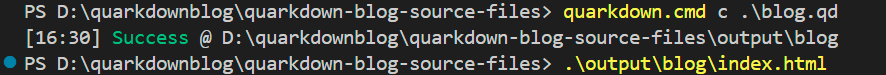
需要注意的是 在gitignore文件里需要添加
output来忽略静态html文件, 因为这个文件夹里是编译生成的文件, 不需要提交到gitee仓库上. 但是需要将html文件提交到github仓库上, 来部署博客.
3 创建Github仓库: 存放博客静态html文件
这个仓库用来存放quarkdown的静态html文件.
在github上创建一个新的仓库, 仓库名字随意, 例如 blog-static ,创建完成后, 点击 克隆 按钮, 复制仓库https地址.然后在output\blog文件夹下使用git命令将这个文件夹初始化为一个git仓库, 将github仓库地址添加为远程仓库, 然后将html文件提交到github上, 以下是第一次编写博客需要执行的git命令:
cd output\blog
# 初始化git仓库
git init
# 查看当前远程仓库链接
git remote -v
# 删除旧的远程链接
git remote remove origin
# 添加新的远程链接
git remote add origin https://github.com/xxx/blog-static.git
# 验证新的远程链接
git remote -v
# 添加所有修改到暂存区
git add .
# 提交到本地仓库(必须写提交说明)
git commit -m "修改了xxx功能/更新代码"
# 将html文件上传到github仓库,首次推送新仓库/分支不存在时，执行(main是默认分支,也可能是master)
git push -u origin main
注意: 每次修改博客文章(quarkdown文件)后, 需要重新编译生成html文件, 然后将html文件提交到github仓库上, 来部署博客. 也就是说每次修改博客文章后, 都需要执行上面的git命令来提交html文件到github上.
绝对不能删除
output\blog\.git文件夹!!!!
以后增加博客文章的时候,更新部署的命令是:
# 编译文章, 生成html文件
cd blog-assets
quarkdown c blog.qd
# 将html文件提交到github仓库上，cloudflare pages会自动部署博客
cd output\blog
git add .
git commit -m "修改了xxx功能/更新代码"
git push 3 配置Cloudflare Pages: 部署博客
登录 Cloudflare 账号, 进入Workers 和 Pages.安装下面的操作一路下去就OK.
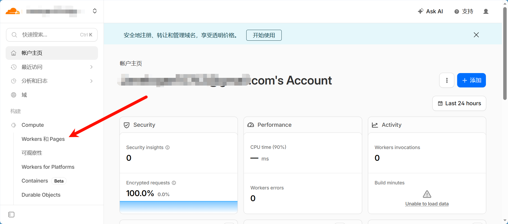
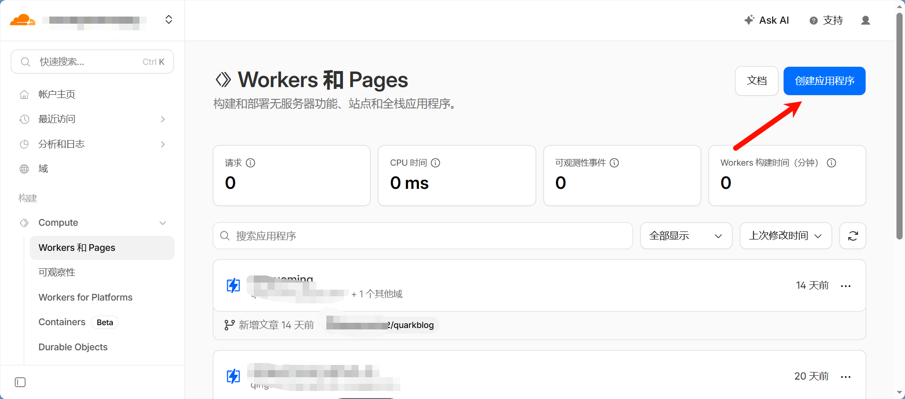
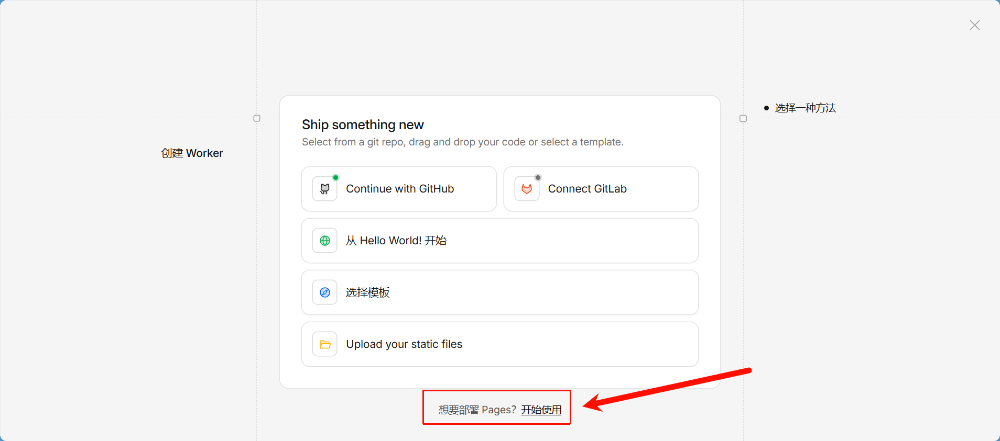
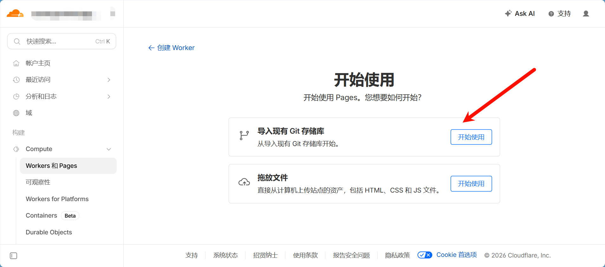
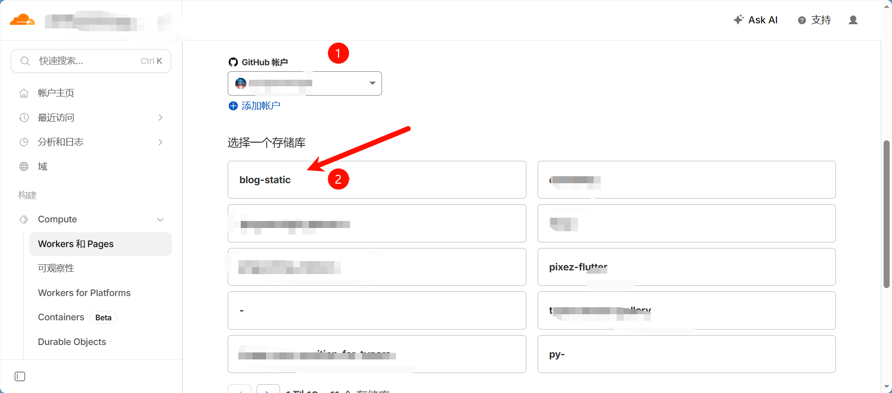
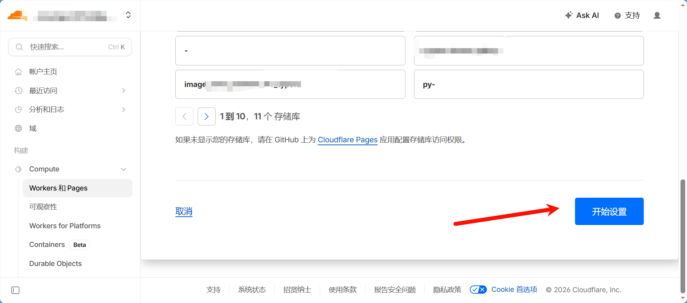
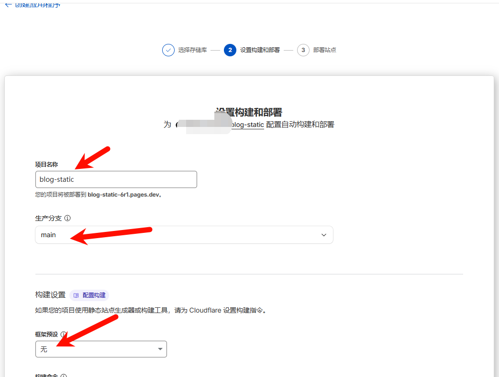
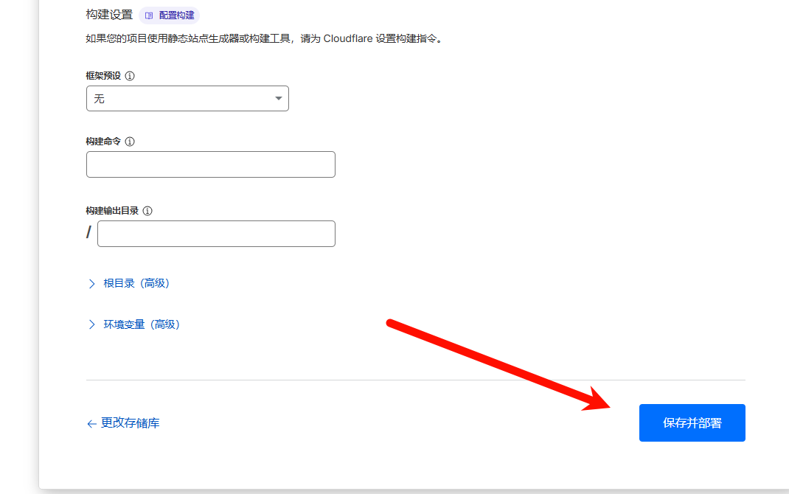
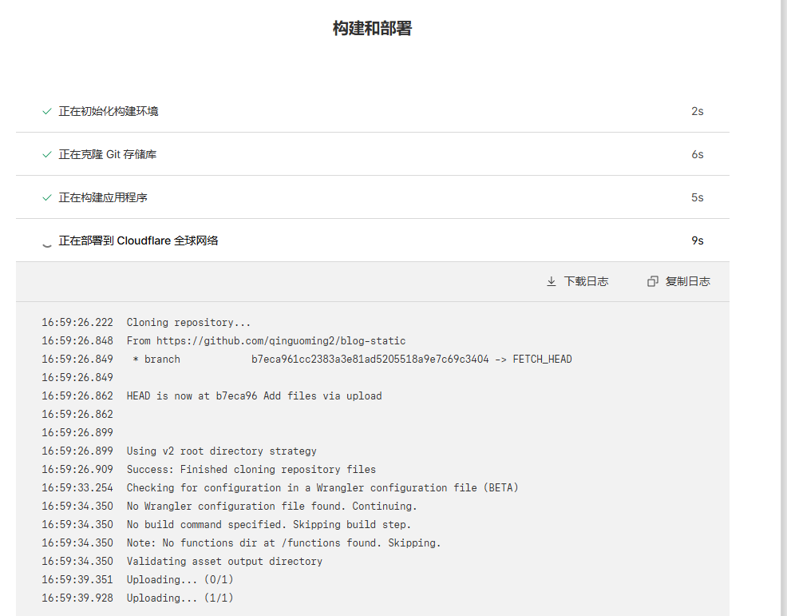
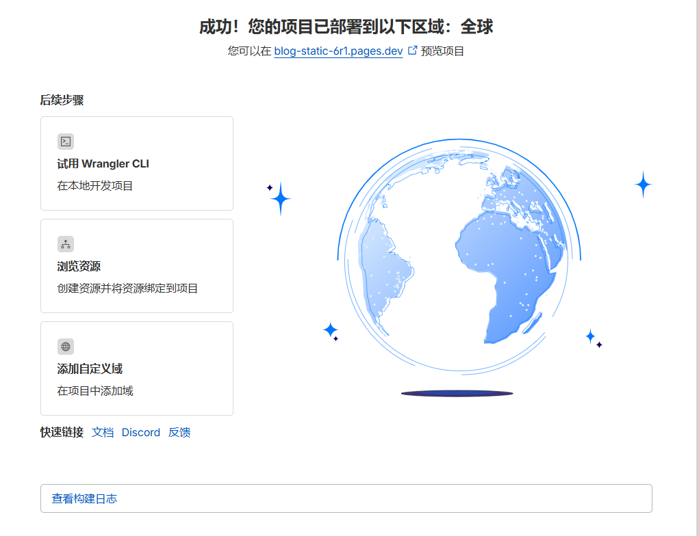
4 (optional) 配置域名解析: 让博客有一个好记的域名
参考文章: